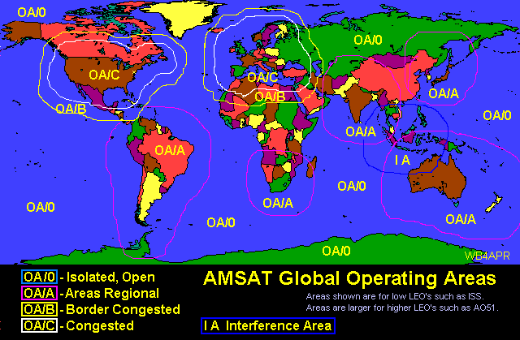
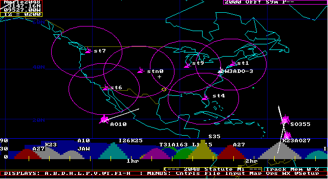

A S T A R S
A S T A R S
Falconsat3 a great opportunity! Falconsat has now been turned on for Amateur Radio use and its PACSAT BBS has the potential for use in emergency traffic handling which continues the traditions of dozens of prior PACSAT digital and APRS digipeating satellites. But Falconsat3 supports both in the same bird. The ASTARS web page (APRS Satellite Traffic and Reporting System) has been following digital satelites since 1998 including the PACSAT protocol sateliltes in the late 90's that also had digipeating enabled for live APRS communications. Most APRS downlinks are available live on these sites:
Live APRS Satellite Downlinks:
Falconsat3 Traffic BBS on the WEB: With the return of this ten year old PACSAT protocol bird not only do we get the APRS digipeating for live communications and station tracking, we also get the file store and forward capability of the PACSAT protocol for more viable emergency communications from distant remote areas as shown in the Concept of Operations (CONOPS) shown at right. Field users of Falconsat3 on the left can send and receive messages and files, but now we also have the full support of the Internet infrastrucutre to have a worldwide network of automatic Falconsat ground stations that can feed a central WEB based portal to make available to anyone, anywhere, anytime, a copy of all traffic on the bird. Emergency responders from anywhere at moderate latitudes can post emergency outgoing traffic for each other and for immediate access to appropriate recepients and served agencies anywhere via the WEB portal.
WHAT WE NEED: Since the BBS traffic being streamed down from Falconsate needs to be collected from ground stations around the world and fed to the central Falconsat Web portal, we need a PACSAT-IS or PACSAT-Internet System just like the APRS-IS system. But since the BBS traffic is not compatible with APRS packets, it needs to be a parallel network. So, what we need are:
Known players?:
Some Screen Shots: I have never operated any of the PACSATS back when they were the backbone of amateur satelilte data transfer. But I have tried to collect a few screen shots to give a flavor of what it is about. First there are the UI packets that anyone with any TNC can see in the downlink shown here at right.
Next is the BBS directory that shows all the files and messages. Here is one under PB and WISP:
. . .
Next is simply reading a file if it is text, and a station log of uploading a file on the right:
. . .
Tracking FALSONSAT3: Remember, no single ground station has to receive most packets. They simply have to receive some and when combined with all the other packets from all the other Groundstations, eventually, everything will be received. This spatial diversity reception multiples the throughput of the on orbit file system to everyone at once while not demanding perfection at any particular ground station. In fact, full PACSAT class AZ/EL antenna systems are not really needed since a simple $70 TV rotator can provide excellent signals 98% of the time as good as the typical $700 AZ/EL rotator. Its a cheap way to go, but then there are few drivers for TV rotators.
OMNI antennas: What we hope is that with enough ground stations with nothing more than OMNI antennas, that there will always be a ground station below Falconsat3 to collect enough packets that when aggregated will provide all packets to the server. A good omni antenna is described further down the page consisting of nothing more than a 20" vertical whip over a ground plane that can give over 7 dBi gain when the satellite is above 30 degrees. With enought stations (with omni antennas and no moving parts) the downlink is well covered.
Amateur Operating Areas: There are huge differences in Amateur Radio operator densites across the globe. In the orignal ASTARS we attempted to define classes of Amateur Operating Areas to be able to manage congestion on the uplink and thequality of coverage for the downlinks to Ground station SATGATES. The map below shows how the density of amateur radio operators across the globe is very uneven. With the USA and Europe containing the highest density and therefore, congestion, compared to remote areas such as Hawaii where amateur radio operators have almost exclusive uncongested access. Remember, more than half of the world has nearly zero satellite uplink congestion, so if you travel in these less dense areas, take your satellite HT and enjoy un-congested operation!

SATELLITES: The following satellites in reverse chronological order have (or will) support ASTARS. [All downlinks can be seen on the APRS satellite downlink Page ]:

1200 Baud PSK ASTARS was a system called TRAKNET which was presented at the 1998 and 99 AMSAT conferences as a 1200 baud mobile satellite network using some of the first PACSATs, AO16 and IO26 which had been authorized for live APRS tracking and position reporting. PSK ASTARS was used by 16 stations during the annual Army/Navy Footbal run and other special events. It is a very viable capability for stations with PSK TNC's or using KA2UPW's sound-card uplink capability. Since all birds shared the same 145.900 uplink, the goal was to set the UI-DIGI callsign on all birds to the SAME generic call, so that mobiles did NOT need to change any settings between satellite passes and therefore get over 12 passes a day from this constellation.. We had hoped to see SOUND-CARD only implementations of the special PSK modems making AO-16 and IO-26 very popular 2-way digital communications satellites again, but no one has risen to the challenge..
1200 Baud AFSK ASTARS The TRAKNET concept was demonstrated using conventional packet radio many times during experiments with the Space Station MIR packet system and SAREX. The Kenwood THD7 Handheld (or mobile D700) with built in 1200 and 9600 baud TNC's was used for two-way self-contained APRS communications via SAREX, PCSAT, SAPPHIRE and ISS at 1200 baud. During a test in June 99, over 55 stations conducted 2 way HT-to-HT message communications. Some questioned the use of 1200 baud PACKET , but it has a 7 dB performance benefit over 9600 baud and is PERFECT for HT-SATELLITE digipeater communications. The 9 dB advantage of VHF to a handheld 2m antenna cannot be beat on any other band. Satellites with this capability are SAREX, PCSAT, the ISS and many more since.
Continuity: We hope that all amateur satellites will continue to support ASTARS missions with such 1200 baud digipeaters on all of their future satellite designs.
9600 BAUD ASTARS became a reality when Kenwood introduced the 1200/9600 baud APRS data TH-D7 handheld in 1998, followed by the TM-D700A mobile radio. These dual band data radios with built-in TNC's and front panel APRS displays make it possible to send and receive the very short APRS style comunications via any 9600 Baud PACSAT if digipeat is enabled (such as UO-22, ECHO and now PFS3). Thus, these radios and subsequent Kenwood and Yaesu radios are off-the-shelf satellite data terminals ready for ASTARS and they need NO PC or other accessory. They can send and receive all data on the radio front panel with only the proper mobile whip antenna! (see below).
Falsonsat User MODES: Falconsat3 operates full duplex with uplinks at 9600 baud GMSK on VHF 145.84 and downlink on 435.103 MHz +/- Doppler at the same 9600 baud GMSK. This makes it trivial to hit the uplink with mobile or handheld antennas and a few watts of power. But the UHF downlink loses 9 dB of additional path loss so it usually takes a gain antenna to get any data except during the center of overhead passes.
PACSAT BBS FILES and MESSAGES: The PFS3 BBS system is a classic file server. The files can be either messages, text, pictures or any other data file. Messages can be full multiline text and documents. This capability is good for bulk delivery of traffic from a remote area.
APRS MESSAGES: In contrast, APRS messages are single LINEs of text, STATUS or POSITIONS. Most messages are best if they stand alone because sequential delivery is not guaranteed. Here is a photo of a 15 byte message received on the TMD700 radio. (The maximum length is 64 bytes).
APRS EMAIL: Simillarly, any APRS operator can initiate an EMAIL (see how) message from his HT or mobile radio. Just like other APRS messages, it is also only ONE LINE and the one line INCLUDES the full email address. This forces brevity! Here is an Email I transmitted from my D700 mobile enroute to work one day. Notice that the SINGLE packet entered into the D700 was simply:
Yet, here is how it was received by my Email system after being SAT-Gated to APRServe and from there, picked up by the EMAIL Engine at WU2Z's and shipped out as regular Email:

OMNI NO-TRACK SAT-GATES With simple antennas (such as a 19+" whip antenna over a large groundplane (the roof of your car)) any TMD700 radio becomes a no-track SAT-GATE downlink receiver. The WHIP will bring in signals whenever the satellite is above about 20 degrees which is about 5 minutes for a nominal high-elevation pass. Note, a 19+" whip is a 1/4 wave antenna at the 2m uplink, and 3/4 wave at the 435 downlink. The 3/4 wave antenna has almost 8 dBi high elevation gain ideal for this application. It is not good on the horizon, but mobiles do not see the horizon and the satellite is 6 dB further away anyway. See plots below.
ADD A TV ROTATOR! After monitoring the birds for a year with the whip, I decided I would rather hear the other 2/3rds of all the data when the birds are below 20 degrees, and so I added a simple $20 rotator interface to my APRStk software to control the ubiquitous 24 AC TV rotator that you can get anywhere. See my APRS Rotator
Unlike previous amateur satellite activity, we can combine the outputs from a dozen such omni stations nationwide and the result is over a 99.96% chance of capturing every packet over the USA! Even if only 4 stations at any one time have the bird in view of their station and even if they only have a 60% chance of decoding each packet, their combined probability is 98%. But if the original packet is replicated TWICE, then this probability becomes 99.96%! A Certainty! (Even an $88 Alinco HT can be used as a downlink station)

This map shows how 6 ground stations limited to solid downlinks only while the satellite is above 30 degrees using only 20" whip antennas can see the satellite anywhere over the USA. Note, the signal above 30 deg is +7 dB closer and maybe +3 dB in the gain lobe of the 3/4 wave whip for an equivalent of +10 dB. THus no packets will be lost. Actually, we would like to see a dozen such downlink stations to provide the added reliability to 99.96%. THis is easy to do. We already have dozens of similar APRServe I-GATES. All they need to do is add a D700 at their station and a whip antenna...
TM-D700 and TH-D7(G) SETTINGS: Here is a list of my minimum setups for the new Kenwood TM-D700 data mobile and TH-D7(G)data handheld for front-panel-to-Satellite mobile communications via a digipeating PACSAT in Mode-J or Mode-B:

TRANSMITTING: Notice, the new D7(G) has the DCD SENSE command so that the TNC will operate full duplex in APRS mode. BUT, In APRS mode, the D700 does not have this ability to set the internal TNC to FULLDUPLEX. THus, while your D700 mobile receive BAND is receiveing data the radio will not transmit. Understanding this problem will be your key to success. If the Satellite has periodic quiet times on the downlink (SUNSAT) then operate normally. It will get a chance to key up. But if the downlink is 100% in use as is normal for UO-22 and all the other PACSATS, then here are some ways to force a transmit:
ANTENNAS: Because of the short coax run in a car, and no need for a PREAMP, a simple 19+" 2m WHIP antenna in the center of your car roof is an ideal mobile OMNI antenna for both VHF and UHF satellites. On UHF, the antenna is a 3/4 wavelength whip with an 8 dBi lobe at high elevations which is ideal for the satellite near the center of the pass (yellow plot below). My D700 will capture packets when the PACSATS are above 25 to 30 degrees for a few minutes, (lower for UO14 and SUNSAT) But to gain the full downlink, a handheld 4 element or so UHF downlink antenna rotated in AZ, EL and polarity is required. Much experimentation in this area is needed. Here is a plot of the EZ-NEC produced gains of three whip antennas including the path loss due to range. My 3/4 wavelength antenna picks up the sats at about 20 deg. Better than shown here.

To validate the data for the 3/4 wave vertical, I built a 1575 MHz scale model of the antenna AND car roof and connected it to a GPS receiver and my SIGPLOT.BAS program. Letting it run all night, gives an all-sky GAIN PLOT using the satellite signal strengths as the RF source. Thus, over time, you get known RF from all angles and all azimuths and the SIGPLOT program produces a real-world plot of actual antenna pattern as shown below. I did it twice, the Green is the 3/4 and Red is the 1/4 wave. Notice the high angle gain of the 3/4 at all angles above about 25 deg. Although the 1/4 is better down to about 10 degrees, the 6 dB greater path loss due to the greater distance to the satellite (and trees and buildings) cancels any advantage here for the weak PACSAT downlinks. The car roof I modeled was the size of a compact sedan.

COME JOIN US LIVE ON THE BIRDS!
CONTINUITY FOR TRAFFIC AND MESSAGE COMMUNICATIONS: This ASTARS concept has been used via many satellties over the years such as AO16, LO19, IO26, SO35, OPAL, SAREX, PCSAT and PCSAT2, Sapphire, ANDE, RAFT, PSAT, YBOX-1 and ARISS. There is no reason why it cannot be supported on all digital amateur satellite missions once the primary mission or science objectives have been met. We encourage experimentation and consideration for future applications. This page dates from 1998 or so, but we try to keep it current. There were no new APRS satellites between about 2007 and 2015 other than the still working PCSAT-1 and the ISS. But in 2015, we returned to space with PSAT and have QIKCOM1, QIKCOM-2 PSAT-2 and BRICSAT-2 in the works as listed at the top of this page.
Return to the APRS HOMEPAGE
{kind=link}
{kind=link}